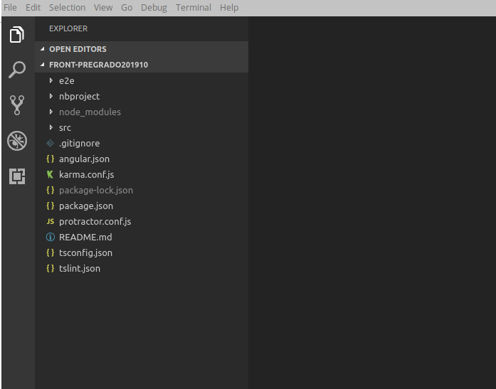
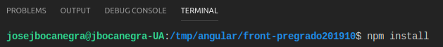
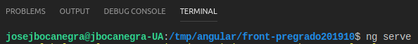
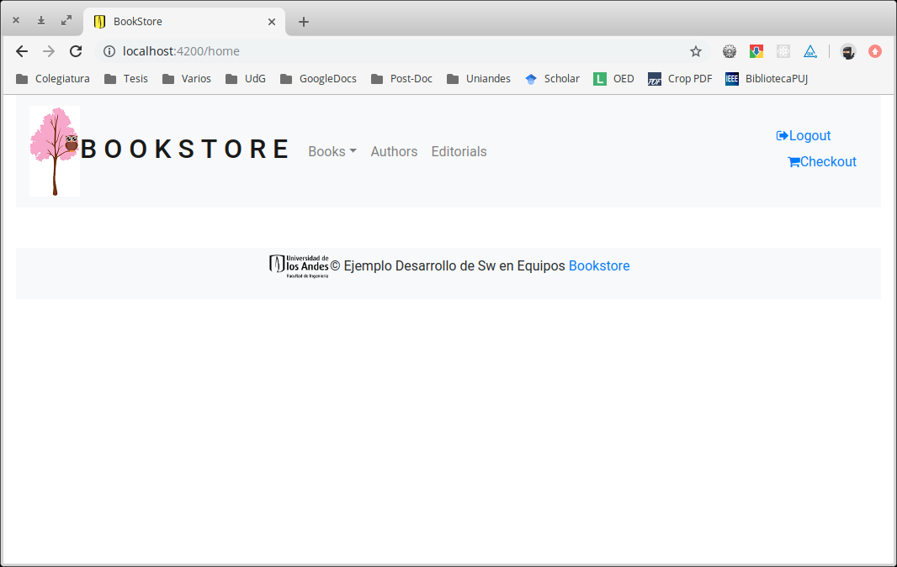

Para poder realizar este taller ud debe:
En github existe la organización https://github.com/Uniandes-isis2603 donde se encuentran creados los grupos (teams) y los repositorios de los proyectos de cada equipo.
El repositorio de su grupo para el proyecto front es sX_nombreProyecto_front_201920, donde X es el número de su sección y nombreProyecto es el nombre de su proyecto.
Para clonar un repositorio de github, es decir crear una copia en su máquina del repositorio en github y guardar información para su posterior sincronización, ud debe:
Para el caso del proyecto del curso, en su máquina virtual ya está instalado un cliente de git (en la línea de comandos).
En github.com localice el repositorio que va a clonar, seleccione "Clone or download" y copie la url.
Desde una línea de comandos vaya a la carpeta de su preferencia e ingrese el comando
git clone url
donde url corresponde a la dirección del repositorio (por ejemplo, https://github.com/Uniandes-isis2603/s4_Servicios_front_201920.git)
Luego aparecerá una ventana emergente en la que se le pedirán las credenciales de github.
Para abrir el proyecto se sugiere tener instalado Visual Studio Code, el cual lo puede descargar desde esta dirección: https://code.visualstudio.com/
Una vez haya instalado Visual Studio Code, abra la carpeta en donde clonó el proyecto.

En Visual Studio Code, abra una nueva terminal e ingrese el comando npm install -g @angular/cli
Esto instalará Angular.
En Visual Studio Code, abra una nueva terminal e ingrese el comando npm install. Esto instalará las dependencias necesarias.

Para ejecutar la aplicación, desde la misma terminal e ingrese el comando ng serve

Vaya a un navegador e ingrese la dirección http://localhost:4200
